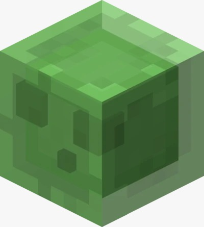
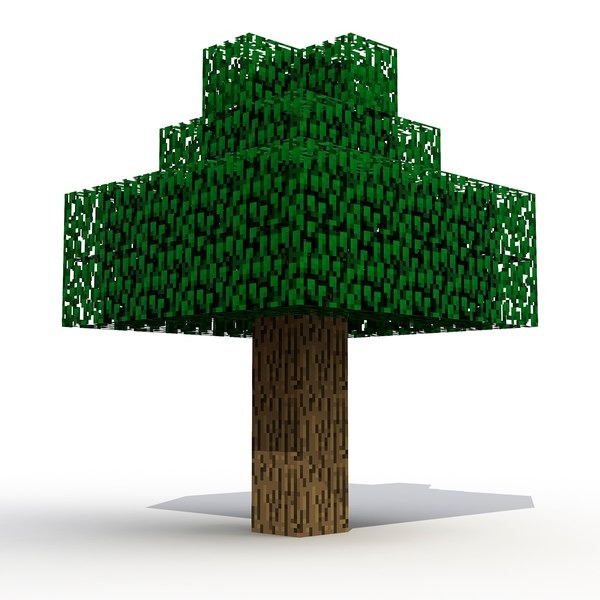
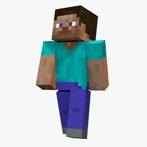
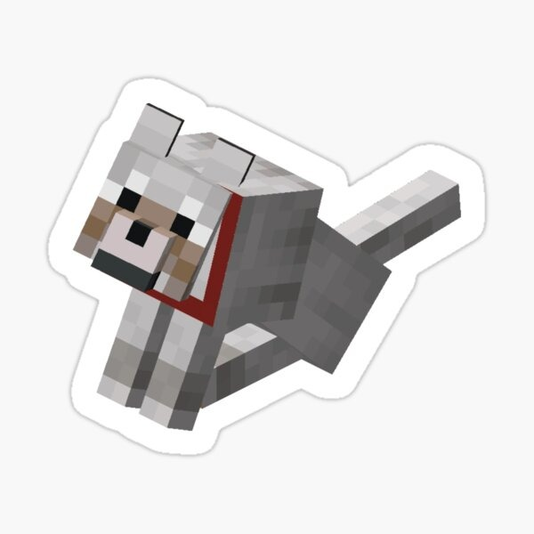

Losas DoblesLas losas son bloques que tienen la mitad de la altura de los bloques normales de Minecraft. Hay muchas losas diferentes en el juego y los jugadores las usan muy a menudo en sus compilaciones. |

Textura en ÁrbolesEn este punto, los jugadores que han estado jugando el juego durante un tiempo conocen los sombreadores y cómo afectan la calidad del césped. Al agregarlos a Minecraft, el juego puede verse mejor. |

Interfaz de UsuarioLa interfaz de usuario actual de Minecraft es bastante básica y ha sido la misma por un tiempo. Aunque hay muchas modificaciones que pueden mejorar la interfaz de usuario, Vanilla Minecraft merece una mejor interfaz. |

MascotasLa única actividad que un jugador puede hacer con su mascota lobo es que se siente o se pare, y aparte de eso, no hay características únicas de mascota. |